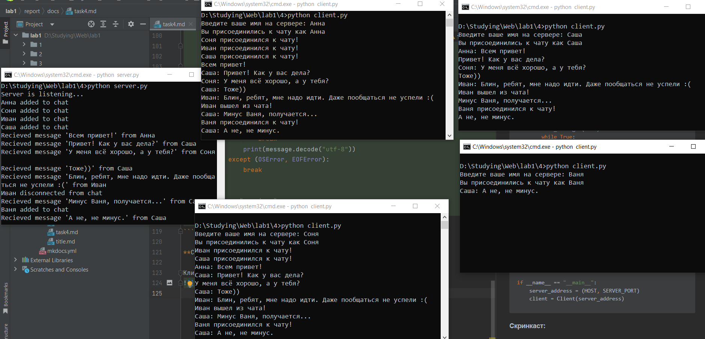

Задание: Реализовать двухпользовательский или многопользовательский чат. Реализация многопользовательского часа позволяет получить максимальное количество баллов. Обязательно использовать библиотеку (не отображается в ТЗ). Реализовать с помощью протокола TCP – 100% баллов, с помощью UDP – 80%. Обязательно использовать библиотеку threading. Для реализации с помощью UDP, thearding использовать для получения сообщений у клиента. Для применения с TCP необходимо запускать клиентские подключения, прием и отправку сообщений всем юзерам на сервере в потоках. Не забудьте сохранять юзеров, чтобы потом отправлять им сообщения.
Мной был реализован многопользовательский чат с помощью протокола TCP.
Листинг кода сервера:
import socket
import threading
from config import HOST, SERVER_PORT, BUFF_SIZE
class Server:
def __init__(self, server_address):
self.clients = {} # {socket: name}
self.conn = socket.socket(socket.AF_INET, socket.SOCK_STREAM)
self.conn.bind(server_address)
self.conn.listen(10)
print('Server is listening...')
def get_messages(self, client_socket):
while True:
try:
message = client_socket.recv(BUFF_SIZE).decode()
print(f"Recieved message '{message}' from {self.clients[client_socket]}")
if message:
self.broadcast(client_socket, message)
except (ConnectionResetError, OSError):
name = self.clients[client_socket]
print(f"{name} disconnected from chat")
self.broadcast(client_socket, f"{name} вышел из чата!", add_name=False)
del self.clients[client_socket]
break
def broadcast(self, client_socket, message, add_name=True):
name = self.clients[client_socket]
for client in self.clients:
if client != client_socket:
if add_name:
client.sendall(f"{name}: {message}".encode())
else:
client.sendall(message.encode())
def run(self):
try:
while True:
client_socket, addr = self.conn.accept()
client_socket.sendall("Введите ваше имя на сервере: ".encode('utf-8'))
name = client_socket.recv(BUFF_SIZE).decode('utf-8')
self.clients[client_socket] = name
print(f"{name} added to chat")
self.broadcast(client_socket, f"{name} присоединился к чату!", add_name=False)
threading.Thread(target=self.get_messages, args=(client_socket,)).start()
except KeyboardInterrupt:
self.broadcast("", f"Чат завершен!", add_name=False)
self.clients = {}
self.conn.close()
print(f"Server stopped")
if __name__ == "__main__":
server_address = (HOST, SERVER_PORT)
server = Server(server_address)
server.run()
Листинг кода клиента:
import socket
import threading
from config import HOST, SERVER_PORT, BUFF_SIZE
class Client:
def __init__(self, server_address):
self.conn = socket.socket(socket.AF_INET, socket.SOCK_STREAM)
try:
self.conn.connect(server_address)
name_question = self.conn.recv(BUFF_SIZE).decode("utf-8")
name = input(name_question)
self.name = name
self.conn.sendall(name.encode('utf-8'))
print(f"Вы присоединились к чату как {self.name}")
threading.Thread(target=self.send_messages, args=()).start()
threading.Thread(target=self.recieve_messages(), args=()).start()
except ConnectionRefusedError:
print("Сервер недоступен, попробуйте позже")
def send_messages(self):
while True:
try:
message = input()
self.conn.sendall(message.encode("utf-8"))
except (OSError, EOFError):
break
def recieve_messages(self):
while True:
try:
message = self.conn.recv(BUFF_SIZE)
if not message:
break
print(message.decode("utf-8"))
except (OSError, EOFError):
break
if __name__ == "__main__":
server_address = (HOST, SERVER_PORT)
client = Client(server_address)
Скринкаст:
Клиент-серверное взаимодействие: 